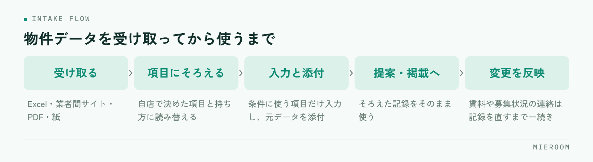

管理会社からはExcel、業者間サイトからは画面のコピー、別の会社からはPDFの図面だけ。賃貸仲介の店舗に届く物件データは、届く形がそろっていないまま毎日増えていきます。そのうえで自店の管理表に打ち直しているため、物件が増えるほど入力の時間も間違いも増えていきます。
この記事の結論
打ち直しを減らす順番は、ツールを探すことではなく「自店で持つ項目を決めること」から始まります。項目が決まっていないデータは、どんな形で届いても毎回判断が必要になります。項目をそろえてから、届く経路ごとに取り込み方を決めるのが現実的な進め方です。
届いた形がそろっていないと、毎回判断が必要になる
同じ物件の情報でも、送り主によって並び方と呼び方が変わります。賃料と管理費が1つの欄にまとまっているもの、敷金が「1ヶ月」と書かれているものと金額で書かれているもの、設備が文章でつながっているもの。
打ち直す作業が重いのは、入力の量ではなく、この変換の判断を1件ごとにやり直しているからです。担当者が違えば判断も変わるため、同じ物件が店内で2通りの形で残ることもあります。
さらに、届いたファイルがメールの中にしか無い状態だと、後から見返すときに探す時間がかかります。元データがどこにあるか分からない物件は、条件を確認するたびに送り主へ聞き直すことになります。
先に決めるのは、自店で持つ項目
取り込みを楽にする最初の作業は、ファイルを触ることではありません。自店で必ず持つ項目を一度決めることです。

最低限そろえるのは、次のあたりです。
- 所在地と物件名、部屋番号
- 賃料、管理費・共益費、敷金・礼金（金額で持つか、月数で持つか決める）
- 面積、間取り、築年
- 入居可能時期と、現況（空室・居住中）
- 元付・管理会社と、連絡の窓口
- 元データの置き場所（ファイルかURL）
ここで決めるべきなのは、項目の名前だけではなく持ち方です。敷金を「1ヶ月」で持つのか金額で持つのかを決めておけば、届いたデータがどちらの形でも、変換の判断は一度で済みます。
図面や写真をどこに置くかも、このときに決めます。物件の記録から辿れない図面は、無いのと同じ扱いになります。
届く経路ごとに、できる取り込み方が違う
経路によって、手の入れ方が変わります。全部を同じ手順で扱おうとすると、どこかで必ず止まります。
| 届く形 | 取り込み方 | 手がかかるところ |
|---|---|---|
| Excel・CSV | 列の対応を一度決めて読み込む | 送り主ごとに列の並びが違う |
| 業者間サイトの画面 | 必要な項目だけ転記、URLを残す | 画面が変わると手順も変わる |
| PDFの図面・物件概要 | 項目だけ入力し、本体は添付で持つ | 文字が画像になっていると拾えない |
| FAX・紙 | 項目だけ入力し、画像にして添付 | そのままでは検索できない |
力を入れる価値があるのは、同じ送り主から繰り返し届くものです。月に何件も届く管理会社のExcelは、列の対応を一度決めれば以後ずっと効きます。年に1件しか来ない形式のために手順を作る必要はありません。
Excelで届いたデータは、列の対応を先に決める
Excelが届いたときに毎回やっているのは、どの列が自店のどの項目にあたるかの読み替えです。これを送り主ごとに1回だけ決めて、メモとして残します。
手順はこの順番です。
- 届いたファイルの列と、自店の項目を1対1で並べる
- 対応しない列（先方の社内メモなど）は使わないと決める
- 単位や表記が違う項目（敷金の月数と金額、面積の単位）の変換の形を決める
- 次に同じ送り主から届いたときは、そのメモのとおりに読み込む
2回目以降は判断が要らなくなるので、作業は確認だけになります。同じ送り主のファイルを毎回ゼロから読み替えているうちは、何件やっても速くなりません。
一度そろえた物件データは、掲載や提案にそのまま回せます。掲載先へ出すときの進め方は物件入稿の作業を短くする手順に、探して提案するまでの流れは物件検索・提案を速くする方法に分けて書いています。
届いたデータの全項目を自店の形に入れる必要はありません。検索や提案で使う項目だけを入力し、それ以外は元のファイルを添付して残せば足ります。項目を増やすほど、入力も更新も重くなります。
図面やPDFは、どこまで入力するかを決めておく
PDFや紙で届くものは、文字として取り出せないことが多いため、全部を入力しようとすると手が止まります。ここは割り切りが必要です。
入力するのは、探すときに条件として使う項目だけにします。所在地、賃料、面積、間取り、入居可能時期。これだけ入っていれば、条件での絞り込みはできます。
設備の細かい記載や、注意書き、申込時の条件は、元のファイルを添付しておけば提案の場で開けます。無理に打ち込むより、元が見られる状態のほうが正確です。
紙やFAXで届いたものは、スキャンか撮影で画像にして、物件の記録に添付します。机の上に紙で置いたままにすると、担当者以外には存在が分かりません。
取り込んだあとは、更新のほうが漏れる
最初の取り込みは意識して行うので、意外と漏れません。漏れるのは、そのあとの変更です。
賃料の変更、申込が入って募集停止、入居可能時期の変更。元付からの連絡はメールや電話で来るため、記録を直さないまま提案に使ってしまうことがあります。
防ぎ方は2つです。1つは、直す場所を1か所にすること。自店の記録を直せば、掲載や提案に使う情報もそこを見る形にしておきます。もう1つは、変更の連絡が来たときに「記録を直す」までを一続きの作業にすることです。
募集が終わった物件を案内してしまうと、お客様への謝罪と再提案が発生します。入力の手間を惜しんで記録を直さないほうが、結果として時間を使うことになります。
よくある失敗
取り込みの仕組みづくりでつまずく形は、だいたい次の3つです。
1つ目は、先に項目を決めずにファイルから手をつけることです。届いたExcelの並びのまま取り込むと、送り主ごとに違う形のデータが並び、あとで検索できなくなります。
2つ目は、全部の経路を同じ手順でそろえようとすることです。紙やPDFまでExcelと同じ扱いにしようとすると、作業が止まります。経路ごとに、どこまでやるかを分けてください。
3つ目は、元データを残さないことです。項目だけ入力して元のファイルを捨てると、条件を確認したいときに送り主へ聞き直すことになります。
Excelの形式が送り主ごとに違うのですが、そろえてもらうべきですか？
物件数が少ない店舗でも、取り込みの手順を決める意味はありますか？
紙やFAXで届く物件は、どう扱えばよいですか？
まとめ：打ち直しを減らすのは、項目を決めることから
届く物件データの形はそろいません。そろえられるのは、受け取る側の形だけです。自店で持つ項目と持ち方を決め、経路ごとにどこまで入力するかを分け、繰り返し届くものだけ読み替えの対応を決める。この順番で進めると、件数が増えても入力は増えません。
更新の反映は、直す場所を1か所にして、連絡が来たときに記録を直すまでを一続きにします。入力の速さを上げるのではなく、同じ情報を打ち込む回数を減らすのが要点です。
ミエルームなら、他社フォーマットの物件データを変換して取り込む物件コンバータと、業者間サイトとの連携で、届いたデータの打ち直しを減らせます。Excelで持っている既存の物件データのインポートと初期設定の代行にも対応しているため、今の管理表から移すところも含めてそろえられます。物件の記録と提案・掲載が同じ場所でつながるので、賃料や募集状況が変わったときに直す場所を探さずに済みます。デモアカウントの発行やご相談は、この下のボタンからお気軽にどうぞ。